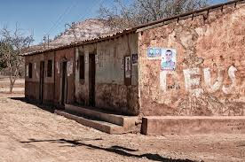

Tudo o que um sonho precisa para ser realizado é alguém que acredite que ele possa ser realizado.(texto original)
Para deixar todos os caracteres com o mesmo espaçamento, usar a tag <code>
Exemplo: Tudo o que um sonho precisa para ser realizado é alguém que acredite que ele possa ser realizado.
Para escrever um trecho com indentações, espaçamentos e etc, usar a tag <pre>
Exemplo sem o pre:
um trecho de código em python
for i in range(1, 10):
print(i)
Exemplo com o pre:
for i in range(1, 10):
print(i)
Para fazer citaçoes, usar a tag <q>
Exemplo: Segundo Albert Eisntein: Não tentes ser bem-sucedido, tenta antes ser um homem de valor.
Para fazer citações completas, usar a tag <blockquote>
Exemplo: Disse Machado de Assis, em seu livro Memórias Póstumas de Bras Cubas:
Ao verme que primeiro roeu as frias carnes do meu cadáver dedico com saudosa lembrança estas memórias póstumas.
Para indicar o significado de uma sigla, usar a tag <abbr>
Exemplo: Estou aprendendo HTML e CSS!!!
Usar a tag <bdo>
Exemplo: Ao verme que primeiro roeu as frias carnes do meu cadáver dedico com saudosa lembrança estas memórias póstumas.
Adicionar imagem para revisar:
